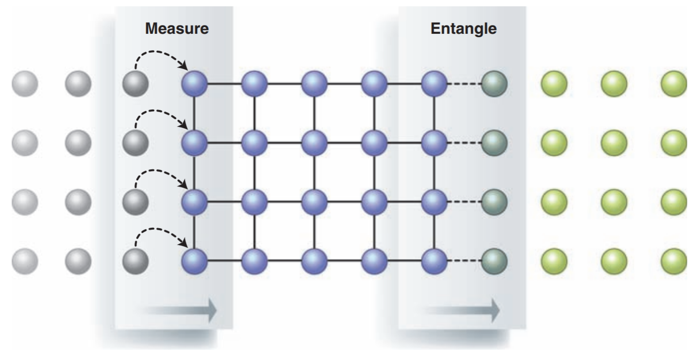
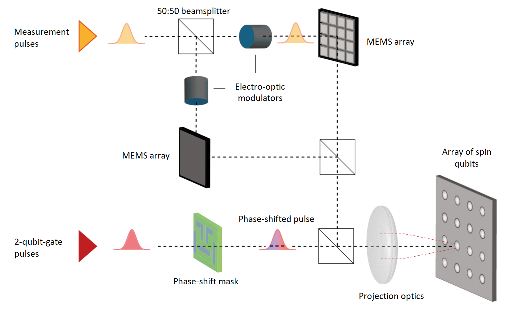
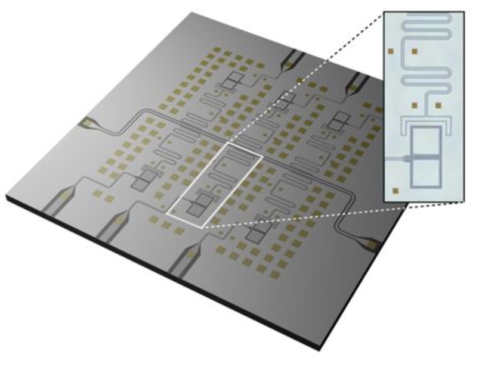
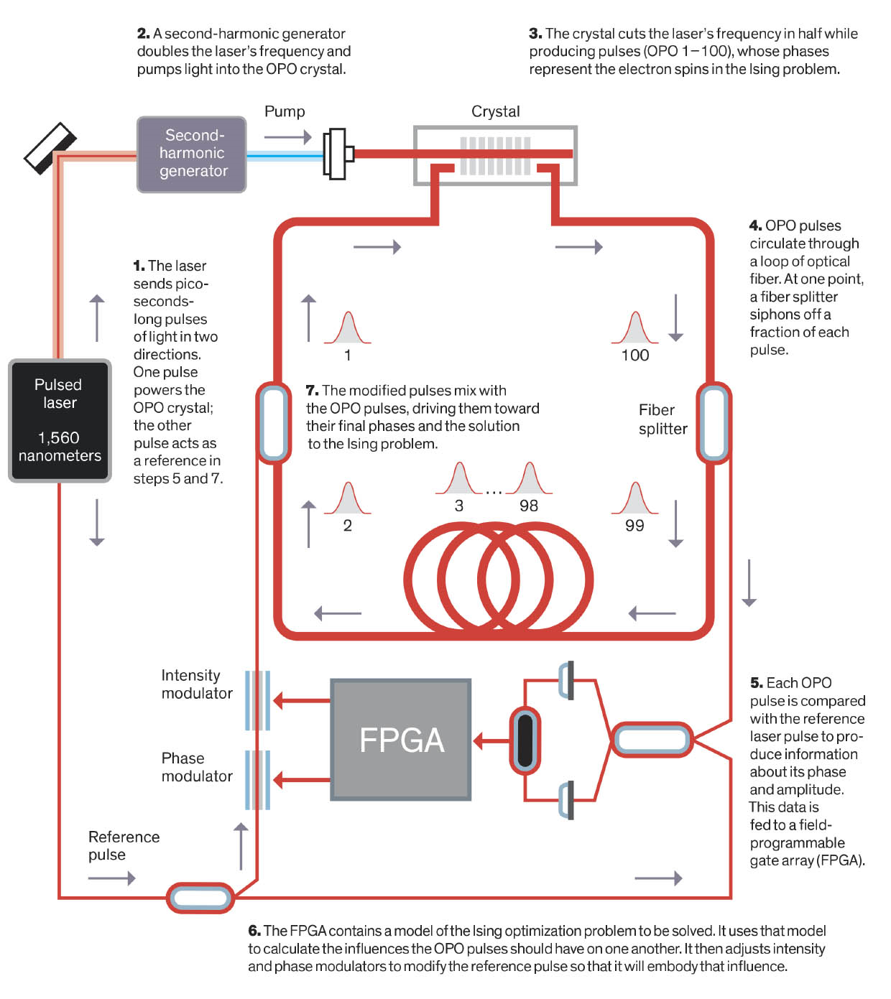
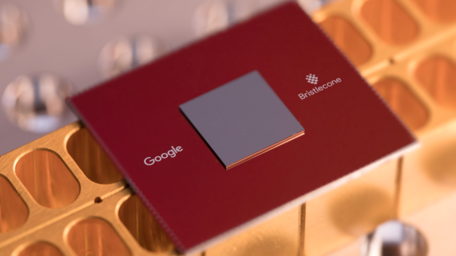

 Image from J.L. O'Brien. doi:10.1126/science.1142892 Quantum-optical systems allow several different interesting approaches to building quantum computers that are, although not unique to optics, certainly well-suited. Terry Rudolph's position piece is a great place to start to learn (amongst other things) about the arguments in favor of cluster-state quantum computation with quantum optics. The continuous-variable nature of general quantum-optical states is also a feature that we exploit in our work.
 Image modified from N.C. Jones et al. doi:10.1103/PhysRevX.2.031007 Spins in semiconductors were one of the earliest proposed candidates for constructing qubits for a quantum computer, and they remain heavily studied. Spins that can be coupled to optical photons are additionally interesting because they admit ultrafast (picoseond-scale) gate operations and they provide a natural interface between computation qubits and communication (flying) qubits for quantum communications. We are interested in spin qubits in 2D materials in particular.
 Image modified from D. Rosenberg et al. doi:10.1038/s41534-017-0044-0 Superconducting circuits currently provide one of the most advanced platforms for building qubits developed to date. They also provide an excellent basis for studying and engineering quantum optics in the microwave-frequency domain. We explore unconventional types of superconducting circuit qubits (especially qubits formed from Schroedinger-Cat continuous-variable states) and approaches to constructing quantum annealers and quantum simulators with these qubits.
 Illustration by Mark Montgomery. Based on Figure 1 in P.L. McMahon*, A. Marandi* et al. doi:10.1126/science.aah5178 Optical and optical-electronic-hybrid computers have recently been revisited as a potential approach to rearchitecting computers to lower power consumption and increase performance. Machines capable of solving optimization problems have been demonstrated, as have neuromorphic systems that perform machine-learning tasks. We explore combinations of all of these, and aim to use time and frequency multiplexing to attempt to exploit the bandwidth benefit that optics has over electronics.
 Image from the Google AI Blog. A surge of interest in quantum computing in the commercial world has resulted in the rapid development of noisy, intermediate-scale (~10-2000 qubits) prototype quantum computers by Google, IBM, Rigetti, IonQ and others. A major open question is: what will these prototypes be good for? While the abovementioned quantum hardware research we engage in experimentally is aimed at building new kinds of NISQ devices, we also study applications of NISQ machines, both to inspire our own hardare development, and for testing and pushing the limits of current state-of-the-art system-level prototypes from the commercial vendors. We are interested in quantum optimization, quantum machine learning, and quantum simulation.